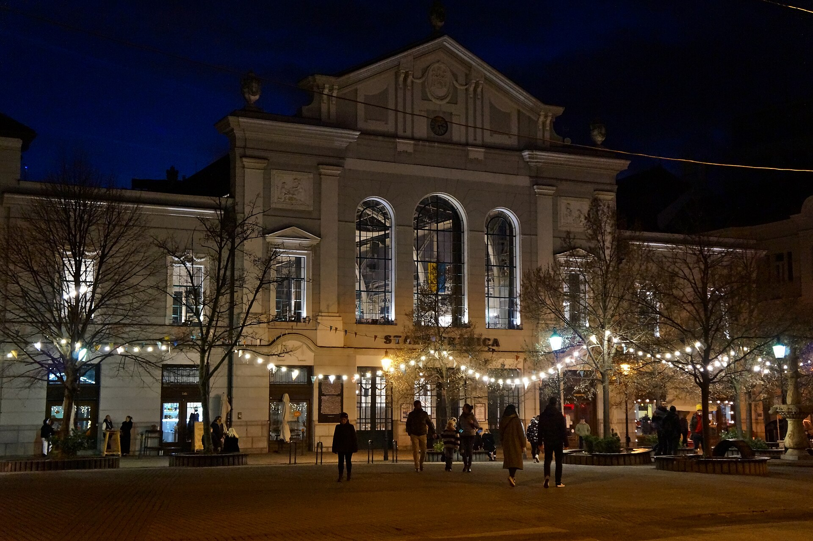
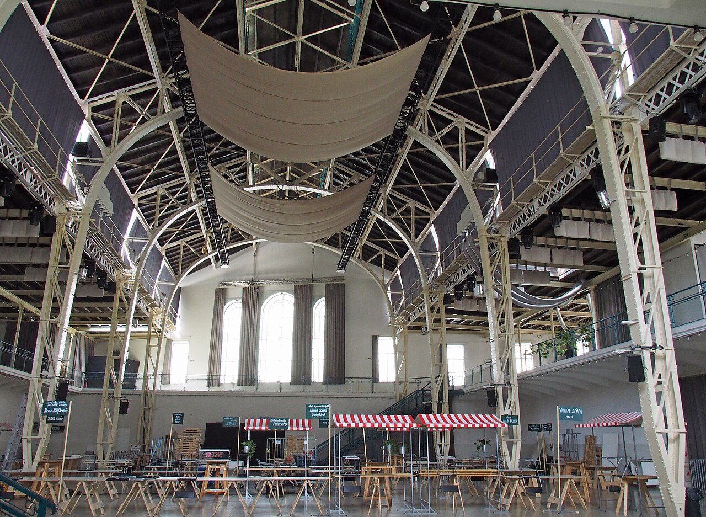

Pozvánka · vstup voľný
Večer
s AI
Tri hodiny o tom, ako umelá inteligencia šetrí čas pri bežnej práci. Žiadne sľuby o budúcnosti, len postupy, ktoré si zajtra ráno vyskúšate sami.

Sobota 5. decembra 2026
Začiatok o 18:00, koniec okolo 21:00
Program
Štyri spôsoby, ako vám AI uľahčí prácu
Každý blok stojí na úlohe, ktorú poznáte z vlastného dňa. Ukážky robíme naživo a po každej je priestor na otázky.
-
01
E-maily a texty za polovicu času
Prvá verzia odpovede, zhrnutie dlhého vlákna a úprava tónu tak, aby text stále znel ako vy.
-
02
Tabuľky a dáta bez vzorcov
Opýtate sa tabuľky obyčajnou vetou. Ukážeme triedenie, čistenie údajov a graf pre poradu za pár minút.
-
Prestávka · káva a niečo malé pod zub
-
03
Dokumenty, zmluvy a porady
Zhrnutie dlhých dokumentov, kontrola, či niečo nechýba, a zápisnica z porady hotová skôr, ako odídete od stola.
-
04
Bezpečne a s rozumom
Čo do AI nevkladať, ako overiť výsledok a ako zaviesť jednoduché pravidlá pre celý tím. Na záver otvorená diskusia.

Miesto
Pod oceľovou klenbou Starej tržnice
Historická tržnica z roku 1910 je dnes priestorom pre trhy, koncerty a konferencie. Sála na galérii je 2 minúty pešo od zastávky Námestie SNP.
- AdresaNámestie SNP 25, Bratislava
- Vstuphlavný vchod, galéria 1. poschodie
- MHDNámestie SNP, Kamenné nám.
- Bezbariérovovýťah pri vchode
Uvidíme sa
5. decembra?
Sobota o 18:00 v Starej tržnici. Prihlásenie zaberie menej ako minútu, vstup je voľný.